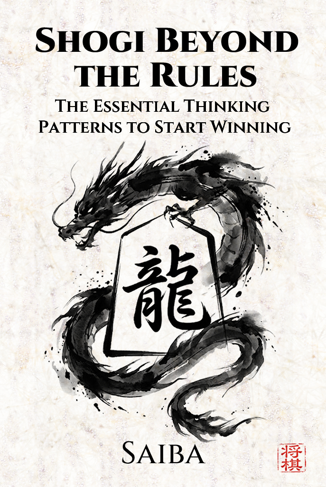
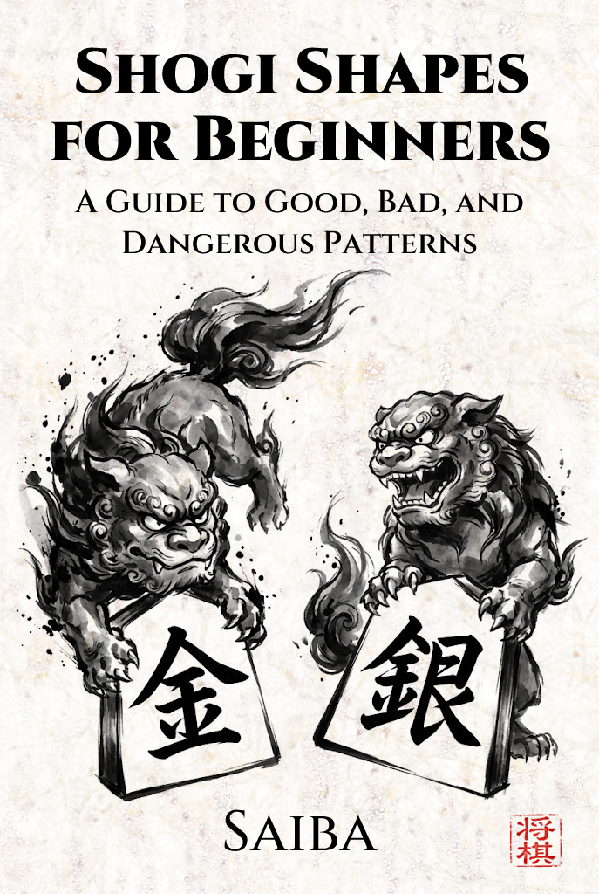
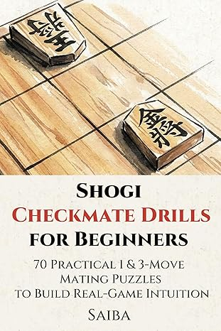

Shogi Books
Kindle Edition
For players who just learned the rules, and for beginners who feel stuck and can't seem to improve.
These Kindle books are written to help you break through that wall.
All volumes available free with Kindle Unlimited
Shogi Beyond the Rules

About This Book
Have you learned the rules of Shogi but don't know how to think about the game? Do you feel stuck at the beginner level, unable to win against human opponents? This book is the ideal "Shogi Thinking Guide" for you.
We avoid difficult Tsume-Shogi or complicated memorization. Instead, we focus on ways of thinking that have an immediate effect — carefully selected knowledge that can boost your strength by one rank, or for some, even 2 to 3 ranks, just by reading. Once you understand this way of thinking, you can quickly graduate from being a complete beginner!
The original Japanese edition reached #1 in the Shogi category on Amazon Japan at launch.
Common Struggles This Book Solves
- You don't know what move to make during a game
- You lose badly whenever you play against someone slightly stronger
- You enjoy watching professional matches but want to understand the meaning behind their moves
What You'll Learn
Practical Knowledge You Can Use Immediately
- How to switch your mindset between the Opening, Middle, and Endgame
- Basic principles of Attack and Defense
- Failure patterns beginners often fall into and how to avoid them
- Techniques to reverse a losing position
Table of Contents
See Other Books
Shogi Shapes for Beginners

About This Book
Do you ever find yourself thinking, "I lost, but I don't know what I did wrong"? The cause of these defeats is rarely a lack of deep calculation — it is often due to leaving "Bad Shapes" on the board.
Understanding Good and Bad Shapes is like learning the "Correct Form" in sports. If you acquire this sense of shape, you will be able to play stable, powerful Shogi even without reading many moves ahead. Originally published in Japan, this is a rare "Comprehensive Guide to Shogi Shapes" designed to solidify your fundamentals — a major gap in English Shogi resources, now filled.
Who Is This Book For?
- Beginners who know the rules but struggle to win
- Players who want to build a solid, comprehensive foundation
- "Watching Shogi" fans (Miru-Sho) who want to understand the deeper logic
- Anyone looking to transform from "random moves" to authentic Shogi
What You'll Learn
Three categories of shape — systematically explained
- Bad Shapes: Fatal weaknesses you must avoid to stop losing instantly
- Dangerous Shapes: Risky formations that can become weaknesses depending on the situation
- Good Shapes: Ideal patterns that advanced players naturally aim for
Table of Contents
See Other Books
Shogi Checkmate Drills for Beginners: 70 Practical 1 & 3-Move Mating Puzzles to Build Real-Game Intuition

About This Book
The most frustrating moment in Shogi — missing a simple checkmate — happens to beginners all the time. Traditional puzzle books give you hints that don't exist in real games: move counts, clean boards, artificial constraints. You might become "puzzle-smart" but remain "game-weak."
This book is a practical Tsume Shogi drill book designed to build real-game intuition for beginners and early intermediate players.
"Real-Game Intuition" Training
- No Move-Count Hints: 1-move and 3-move mates are mixed — you must read the board, not the hint
- Visual Noise Training: Find checkmates among irrelevant pieces on a cluttered board
- Selective Use of Hand Pieces: Choose the correct pieces from your hand, mimicking real-game complexity
Who Is This Book For?
- Absolute beginners who know the rules but struggle to finish games
- Players up to 5-kyu looking to sharpen their finishing power
- Anyone ready to stop missing simple mates and start winning more